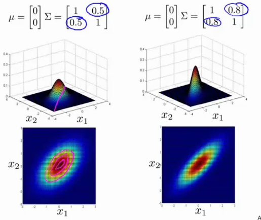

Fraud detection: xi is features of user i activities (typing speed, visit time, ...) → model p(x), identify unusual users.
manufacturing
monitoring computers in datacenter, xi is features of machine i (machine load, netowrk traffic, memory use, ...). Model the usage, identify machine misuse or time-to-fail of the machine or...
Gaussian Distribution
= normal distribution
if x is gaussian distribution, it has mean μ and variance σ2.
x∼N(μ,σ2)
center of bell shape is mu, width is sigma.
p(x;μ,σ2)=2∗πσ1exp(−2σ2(x−μ)2)
area under curve must integrate to 1 :) property of probability distributions
parameter estimation
dataset {x(1),x(2),x(3),...,x(m)} where x(i)∈R.
μ=m1i=1∑mx(i)σ2=m1i=1∑m(value minus centerx(i)−μ)2
these parameters are actually the maximum likelyhood estimates
sometimes yo will see 1/(m-1) but it makes no difference if training set is large enough.
Density Estimation - Algorithm
Given a training set {x(1),x(2),x(3),...,x(m)}, each example is x(i)∈R.
The new variance σ is equal to the multiplication of the first variance with the second one, ie σ12⋅σ22.
Developing an anomaly detection system
real number evaluation makes making decisions on what steps to take easier.
Assume we have some labeled data, of anomalous and non-anomalous examples (y=0 if normal, y=1 if anomalous).
Training set: {x(1),x(2),x(3),...,x(m)} (assume noraml examples / not anomalous)
Validation set: ^
Test set: ^
Example:
10 000 good engines
20 flawed engines
Split it into train (6000 y=0) / validation 2000 (y=0)-10 (y=1) / test 2000 (y=0)-10 (y=1)
this means only anomalies in the validation / test set!
Evaluation:
fit model p(x) on training set {x(1),x(2),x(3),...,x(m)}
on a validation/test sample x, predict
y = 1 if p(x)<ϵ (anomaly)
y = 0 if p(x)≥ϵ (normal)
somewhat similar to supervised learning, where we evaluate by calculating the amount of correctly predicted samples.
possible eval metrics: precision / recall / f1-score
can also use validation set to choose parameter ϵ. You can try many different ϵ to find the one that has the highest f1-score
Anomaly detection vs supervised learning
If we have this labeled data, why not just use supervised learning to predict y=0 or y=1?
Anomaly detection should be used if
you have a problem with very small number of positive samples
large number of negative examples (y=0), used to fitp(x).
many different types of anomalies. hard for any algo to learn what the anomalies look like, and future anomalies might look completely different.
examples:
fraud detection
manufacturing
monitoring machines
Supervised learning:
large number of positive and negative examples
enough positive examples for algo to get sense of what positives are like; future samples are likely to be similar to training set.
examples:
email spam classification
weather prediction
cancer classification
Choosing what features to use
What features you use has huge effect
We modelled features as gaussian distribution
plot a histogram of the data to make sure its gaussian
algo will often work just fine even if not gaussian
if the data is really not gaussian, apply transformations to make it more gaussian. For example a
x=log(x)
even better x=log(x+c)
x=x3
x=x1/2
...
x = data;
hist(x, 50); % 50 bins
hist(x.^0.05, 50); % looks more gaussian
x_new = x.^0.05;
Error analysis procedure
want p(x) is large for normal examples x.
want p(x) small for anomalous example x.
Most common problem:
p(x) is comparable (both large) for normal and anomalous examples
find different feature x2 that is more different from normal and anomalous.
Example monitoring computers
x1 = memory use
x2 = disk access/sec
x3 = CPU load
x4 = network load
lets say webservers, so cpu scales linearly with network. If now abnormally large cpu load might indicate a bug in a server ro whatever, so we can define a new feature
x5=network_loadcpu_load
x6=network_loadcpu_load2
Multivariate Gaussian Distribution
Given
p(x1;μ1,σ12)
p(x2;μ2,σ22)
Instead of modelling them seperately, model them all in one go
x∈Rn
parameters μ∈Rn,Σ∈Rnxn (covariance matrix)
Now
p(x;μ,Σ)=(2π)n/2∣Σ∣1/21exp(−21(x−μ)TΣ−1(x−μ))
with ∣Σ∣ being the determinant of sigma
Examples
if you shrink sigma, the height increases and the width decreases (integral has to equal 1)
if you increase sigma, the width increases, the height becomes lower.
Changing one parameter at a time
changes the scale in one direction
if you change the values of the covariance matrix along the off-diagonal, you get more peaky distribution around the x1=x2 line (positive correlation)

you can also invert the values (ie make them negative), to get negative correlations
Changing values of μ
moves the peak of the distribution
Anomaly detection using MV Gaussian
The probability of x is given by
p(x;μ,Σ)=(2π)n/2∣Σ∣1/21exp(−21(x−μ)TΣ−1(x−μ))
Given a training set {x(1),x(2),x(3),...,x(m)}∈Rn, μ and Σ become
μ=m1i=1∑mx(i)Σ=m1i=1∑m(x(i)−μ)(x(i)−μ)T
fit model p(x) by setting μ and Σ as above
given a new example, compute the probability of x as above
essentially the same as linear regression, but with different optimization objective.
for this algo (content based recommendation) we assume that we have some features that describe the movies action, romacne, ...
Collaborative filtering
has the property of feature learing → learns the features
Given the example table from above, how do we know what x1,x2,...xn is?
Imagine every user tells you what she likes in movies (ie romance). Now it becomes possible to infer what the features are.
What feature vector shuold x(i) be so that (θ(1))Tx(1)≈y
Optimization algorithm
users have given preferences, ie θ(1),θ(2),...,θ(n), learn x(i):
x(i)min21all j for we have a rating for movie ij:r(i,j)=1∑((θ(j))Tx(i)−y(i,j))2find features that are close to the actual value the user gave+2λk=1∑n(xk(i))2
For all users at the same time, sum over all movies x(1),x(2),...,x(n)
Randomly guess some initial values of θ. Given some set of movie ratings x, update the estimate of θ
θ→x→θ→x→..
when you run this algorithm with a large set of users, everyone helps in making all of the predictions better "for the common good", ie. collaborative filtering
Collaborative filtering algoritm
Two things have already been suggested:
Given x(1),x(2),...,x(nm), estimate θ(1),θ(2),...,θ(nu):
But, lets put both optimization objectives together:
J(x(1),...,x(nm),θ(1),...,θ(nu))=21sum over all users-movies pairs(i,j):r(i,j)=1∑((θ(j))Tx(i)−y(i,j))2+2λi=1∑nmk=1∑n(xk(j))2+2λj=1∑nuk=1∑n(θk(j))2
So instead of going back and forth, we just optimize everything simultaneously.
Note that we DONT use the x_0 = 1 term, NO INTERCEPT! We learn all of the parameters so we dont need to hardcore x0
Initialize x(1),x(2),...,x(nm) to small random values
Minimize θ(1),θ(2),...,θ(nu) using gradient descent
Vectorization: low rank matrix factorization
Lets work out an alternative way to do collaborative filtering. Using the leading example above, with nm=5,nu=4.
Y=⎣⎢⎢⎢⎢⎡55?005?4000?05500?40⎦⎥⎥⎥⎥⎤
What user j predicts on movie i is:
predictions=⎣⎢⎢⎢⎢⎢⎢⎢⎡(θ(1))Tx(1)(θ(1))Tx(2)...predicted rating of user 1 on last movie(θ(1))Tx(nm)(θ(2))Tx(1)predicted rating of user 2 on movie 1(θ(2))Tx(2)...(θ(2))Tx(nm)............(θ(nu))Tx(1)(θ(nu))Tx(2)...(θ(nu))Tx(nm)⎦⎥⎥⎥⎥⎥⎥⎥⎤